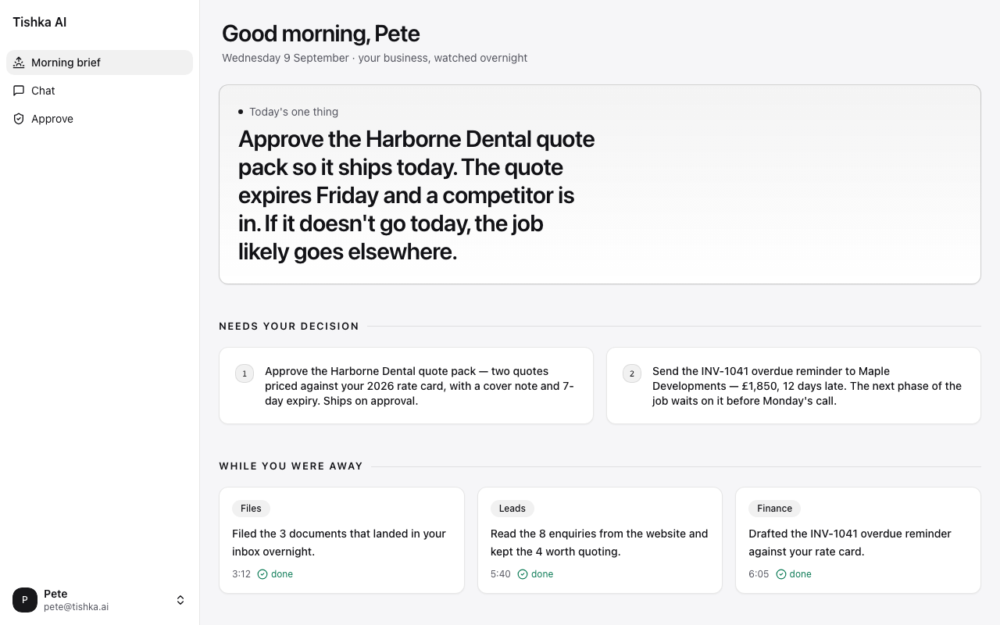

We put AI to work in businesses like yours. Winning back hours, adding revenue, keeping customers happier. Built on the tools you already use, run for you.
Drag the sliders for your own numbers. No email required, this stays in your browser.
Your estimated time back
Your time back, worth
Illustrative estimate based on typical results across Tishka's live automations. The diagnostic gives you numbers specific to your business.
Three demos, each on its own page. No signup, no call, no card. The parser really parses: in your browser, nothing sent anywhere.

Open the demo£499, one fixed fee.
5 hours found or full refund. If the report doesn't surface at least 5 reclaimable hours a week, the £499 comes back in full. No conversation needed.
Every pound credited. Go ahead with any build and the £499 comes off it. The diagnostic was free.
Book the diagnosticOne fixed fee. The refund promise is honoured, not negotiated.
One hour. We walk through the day-to-day: who does what, when, and how the week actually flows. So we can map the rhythm of the business and see where bottlenecks build up in the working day, and around whom. No pitch, no tech talk.
Built from the call transcript through our own report pipeline: everything we heard in your words, every opportunity ranked, a map of the workflows that leak, and the one to fix first. Plain English.
Thirty minutes on the report, on screen. We tell you what to build first for the quickest win. You decide whether we go ahead.
An agency builds something and walks away. A partner stays. Builds the foundation, finds the opportunities, proves they work, keeps them running. Three steps:
This is the foundation. Most companies have their data and knowledge scattered across different tools and different people. Nothing talks to anything else. We connect the systems already in use and pull everything into one place, the Company Brain, so AI has a single source of truth about how the business actually works. Without this, everything else is guesswork. Not a wiki someone has to keep updated. A brain that watches the business and is kept accurate for you.
Once the full picture exists, we can see clearly where time and money are lost, where work is repeated, where things slip. We start small: one clear improvement in your hands within 1–2 weeks that proves the impact is real. Small proof first, bigger gains next. Never asked to bet on a promise.
AI takes on the less critical, repetitive jobs in the background, so the team can focus on the work that actually moves the business forward. It only surfaces what needs a human decision. Everything else is handled.
Drowning in admin used to mean hire more people or buy more software. Hiring adds a person to the queue instead of removing it. Software makes you the integrator. A person still does the work, just in a new tab.
What changed: in narrow, repeating workflows, AI now does the work. The invoice gets matched, the chase goes out, a person approves.
The catch: it only works where work repeats and there's a right answer. That's the only work we look for.